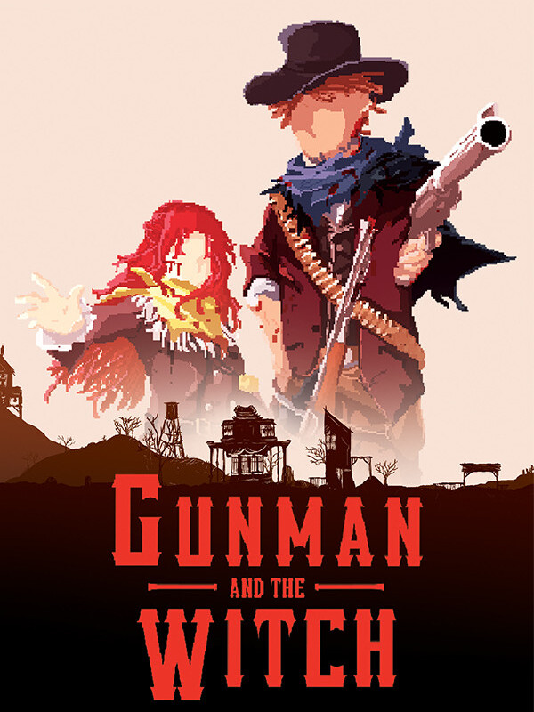

Gunman And The Witch
Gunman And The Witch
Details
|  | |
| Playtime | Not Played |
| Last Activity | Never |
| Added | 28/04/2020 |
| Modified | Never |
| Completion Status | Not Played |
| Source | Steam |
| Platform | PC |
| Release Date | 14/02/2020 |
| Community Score | 71 |
| Critic Score | |
| User Score | |
| Genre | Action Early Access Free to Play Indie Simulation Strategy |
| Developer | Jeeratumrong Nakpracha Noppasin Ngamsanguanprapa Pawika Khampawong Phun Peeticharoenthum Wichayuth Luaengtawekul |
| Publisher | Phun Peeticharoenthum |
| Feature | Cloud saves Single Player |
| Links | PCGamingWiki Community Hub Discussions Guides Store Page News |
Description
Wild West City-Builder meets Top-Down Shooter
Challenge your shooting and management skills in this indie game, settled in the lonely western town of Cattlestone, Texas, 1887.
Build. Fight. Unite.
You play as Jack Lloyd, the new sheriff in town and also a skilled-gunman. Jack teamed up with Darlene Cassidy, a red-haired girl who has supernatural abilities and has been accused as a witch. Together, you and Darlene have to rebuild, protect and improve the life quality of Cattlestone.Gameplay Overview :
- Town Economy - The player needs to take care of the Cattlestone town by running businesses and managing civilian's role to generate incomes and attract more travelers and civilians. There are four factors to take care of: Security Support, Food Support, Shelter Support, and Social Support.
- The Wild-West - As a new sheriff of the Cattlestone. You must protect civilians from outlaws by raising the town's security and confronting enemies.

Key Features :
- Management System - The player can build, modify, and control buildings as businesses to gain wealth and attract more travelers to the town. This includes assigning civilians to buildings and quests and modifying opening hours of buildings to suit their playstyles.
- Building Activities - The player can access buildings for activities such as Bounty hunting, Buying weapons, Gathering resources, Assigning missions to civilians, etc.
- Combat System - Fight crime with violence or peace. The player can choose to deal with outlaws by starting a gunfight (like a Top-Down Shooting game) or try to negotiate with them with their words in a peaceful way.
- Supernatural Powers - Combines fighting skills with Darlene's Psychic abilities: Teleport, Mind control, Eagle Eye, and Shield to create unique fighting combos and gain the upper hand in combat.

WELCOME TO BETA!
This is the BETA 2.x version of Gunman and the Witch and it's available for anyone with no charge! Our goal is to make an indie game that combines the City Builder genre with Top-Down Shooter settled in the Wild-West era.WE NEED YOUR FEEDBACK!
Since this is work-in-progress. There might be bugs and glitches, so please help us by reporting them using our issue reporter on GitHub (Gunman And The Witch Issue Tracker) or send your comment directly to our game pages.The best way to support our game is to give us your feedback! We take all of your comments seriously and we'd love to hear what you like or dislike about the game. You can also tell us what you like to see in the future so we can start to improve Gunman And The Witch together!
We read every one of your comments on every game page (Steam, Itch.io, and GameJolt). So, we'd appreciated, if you leave your comment anywhere.

TERM OF USE & AGREEMENT
This product is copyrighted and protected. The creators claim the full rights of this product as intellectual property. By download and play this game product, the player agrees to these legal-binding agreements:The player can download, play, and make a copy of this BETA version for free.
Re-selling, Editing, Modifying, and Re-distributing (such as reposting the game file on websites or publishing the game file on public sources in any form) are not allowed.
UNITY ANALYTICS
We're using Unity Analytics service to collect your game data. This helps us to understand how the player reacts to each component of the game and make it easier to improve our game mechanics. So, please connect to the internet while playing and allow us to collect your game data.
If you don't have access to the internet right now, don't worry! just keep playing. Your game data will be stored and sent to us next time you play with the internet connection.
ENJOY !
Our Team
We're a team of 5 indie game developers and college students from KMUTT, Bangkok, Thailand. Our team consists of :
Creator and Lead Developer
Phun Peeticharoenthum (Phant)
Programmer
Wichayuth Luaengtawekul (New)
2D Artist
Noppasin Ngamsanguanprapa (Nine)
Programmer and Tester
Jeeratumrong Nakpracha (Mui)
UI Designer
Pawika Khampawong (Bum)
© All rights reserved